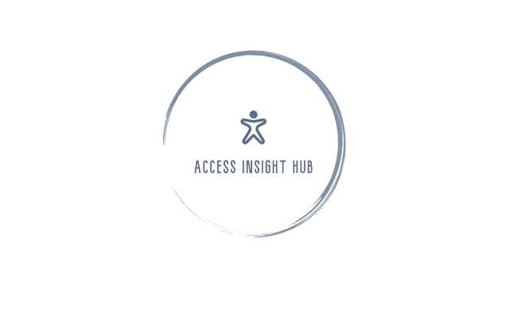
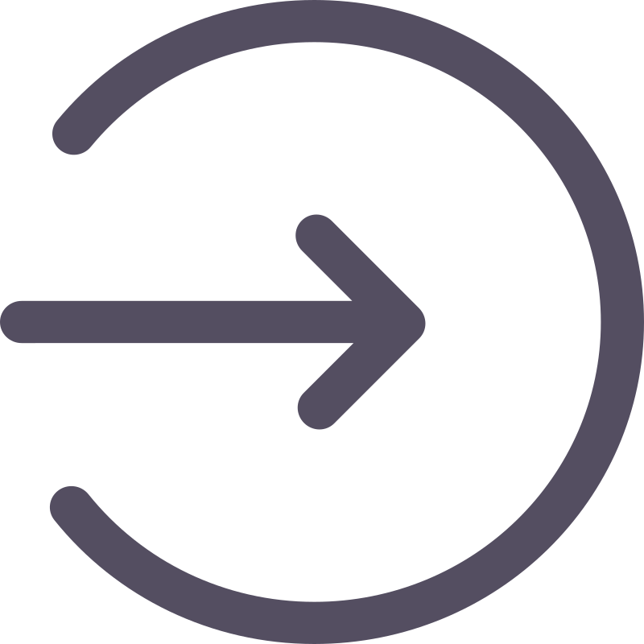
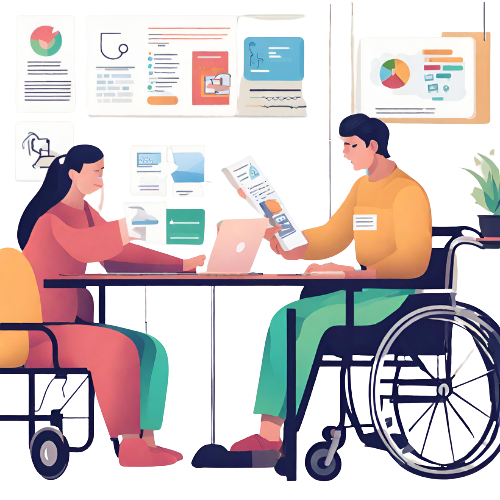

<!DOCTYPE html>
<html lang="en">
  <head>
    <meta charset="UTF-8" />
    <link rel="icon" type="image/svg+xml" href="/vite.svg" />
    <meta name="viewport" content="width=device-width, initial-scale=1.0" />
    <title>Accessibility Portal | TeamNameNotFound</title>
    <link href="https://cdn.jsdelivr.net/npm/bootstrap@5.3.2/dist/css/bootstrap.min.css" rel="stylesheet" integrity="sha384-T3c6CoIi6uLrA9TneNEoa7RxnatzjcDSCmG1MXxSR1GAsXEV/Dwwykc2MPK8M2HN" crossorigin="anonymous">
    <link  rel="stylesheet" href="https://cdnjs.cloudflare.com/ajax/libs/font-awesome/6.4.0/css/all.min.css"/>
    <link rel="stylesheet" href="LandingPage.css"/>
  </head>
  <body>
 
    <div id="root"></div>
    <script type="module" src="/src/main.tsx"></script>
  

  <!--
  <div>
    <div class="main-page">
        <nav class="navbar">
            <div class="container-sm">
                </img>
                <div class="task-menu">
                      <button class="login" onClick={directToLogin}>
                        LOGIN 
                    </button>
                    <button onClick={directToRegister}>
                        SIGN UP
                        <span> </span>
                    </button>
                </div>
            </div>
        </nav>

        <svg viewBox="0 0 500 40">
            <path d="M 0,10 C 150,40 350,0 500,5 L 500,00 L 0,0" fill="snow"></path>
        </svg>

        <div class="illustration">
            </img>
            <div class="greeting">
              At AccessInsightHub, we are dedicated to fostering inclusivity and advancing research for accessibility. Our platform serves as a dynamic hub, connecting researchers and participants in a collaborative space dedicated to understanding and improving the experiences of people with disabilities.
              <br>
              Explore a wealth of studies, surveys, and research projects curated to provide valuable insights into various aspects of accessibility. From technological advancements to social inclusion, our platform offers a diverse range of topics that contribute to a deeper understanding of the challenges and opportunities within the disability community.
              
            </div>
        </div>

        <div class="introduction-grid">

            <div class="item">
              <p class="heading">Dive into Insightful Studies</p>
              Explore and create a collection of cutting-edge studies that delve into the diverse facets of accessibility. From groundbreaking research to nuanced examinations of societal inclusion, our platform hosts a spectrum of research projects for those passionate about driving positive change.
            </div>

            <div class="item">
              <p class="heading">Participate in Surveys</p>
              Our platform empowers researchers with the ability to conduct participatory surveys, enabling them to gather first-hand experiences and perspectives from a diverse community. 
            </div>

            <div class="item">
              <p class="heading">Connect with Researchers</p>
              Forge connections with leading experts and researchers. Our portal facilitates direct communication, allowing you to reach out for more information, collaboration opportunities, or to contribute your unique perspective to ongoing studies.
            </div>
            
        </div>
    </div>
    
  </div>
    
-->
  </body>
</html>
